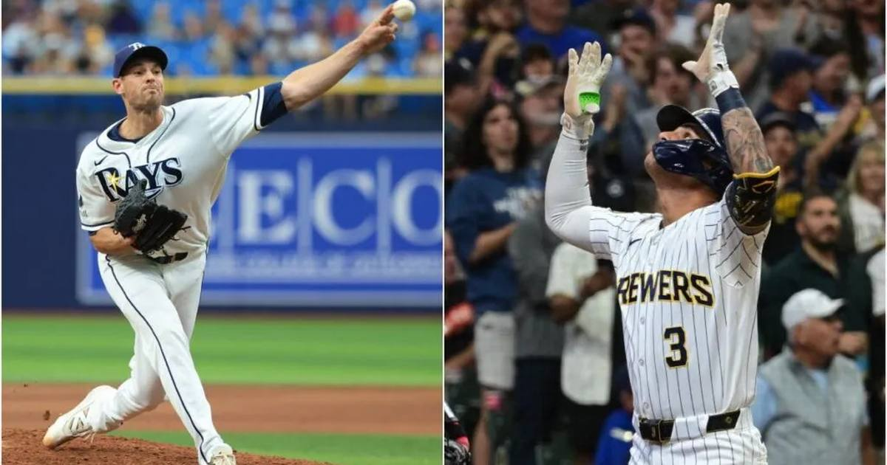

World Series Set: Brewers vs. Rays — First Fall Classic Since 1980 With Both Teams Chasing Their First Title
Game 1 tonight in Milwaukee: Nick Martinez vs. Jacob Misiorowski. Tampa Bay's 7-3 ALCS Game 6 win and Milwaukee's sweep of the two-time defending champion Dodgers set up the first World Series since 1980 where both clubs are chasing their first championship.

The 2026 World Series starts tonight at American Family Field — and history is baked into the matchup.
The Firsts
Per the AP, this is the first Fall Classic since 1980 in which both teams are seeking their first championship:
• Rays (98 wins) — lost their only two previous World Series (2008, 2020)
• Brewers — haven't been back since losing in 1982
How They Got Here
• Rays beat Guardians 4-2 in the ALCS, closing it out 7-3 in Game 6 on two-run homers; Freddy Peralta named ALCS MVP (2-0, 0.75 ERA, 12 innings) — and he faces his old club in this series
• Brewers swept the two-time defending champion Dodgers 4-0 in the NLCS — the Dodgers' first sweep as a franchise since 1966
Game 1 — Tonight, 8 p.m. ET, FOX
• Rays: Nick Martinez vs. Brewers: Jacob Misiorowski
• Martinez gets the ball after the Rays gave ace Drew Rasmussen an extra day of rest
Two franchises, zero rings, one week to fix that.
Sources: Reuters — 'Two-run homers send Rays past Guardians in Game 6, into World Series' · Milwaukee Journal Sentinel — 'Rays will send Nick Martinez against Jacob Misiorowski in Game 1'
Gear up: Fanatics